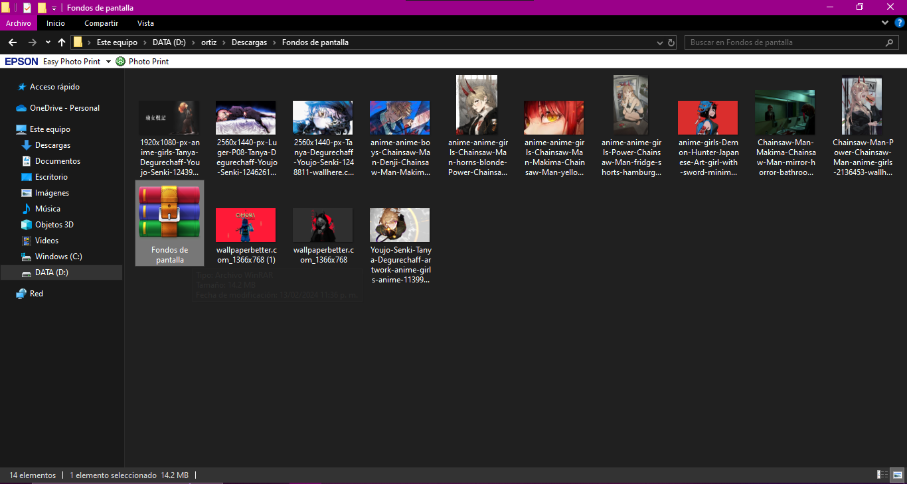
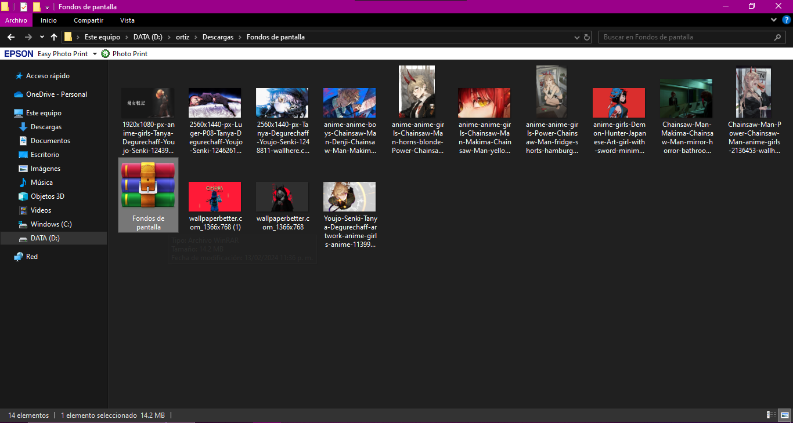

Utilerías
INTRODUCCIÓN.
Las utilerías (también conocidas como utilidades o herramientas) son programas o conjuntos de funciones que proporcionan funcionalidades adicionales para facilitar tareas específicas en el desarrollo de software o en la administración de sistemas. Estas utilerías pueden incluir una amplia variedad de herramientas que van desde simples scripts hasta programas complejos con interfaces gráficas.
INFORMACIÓN.
¿Qué es una Utilería?
Son programas de servicios que sirven de apoyo al procesamiento de los trabajos. En informática, una utilidad es una herramienta que sirve de soporte para la construcción y ejecución de programas, en donde se incluyen las bibliotecas de sistema, middleware, herramientas de desarrollo, etc.
TIPOS DE UTILERÍAS.
- Utilerías de sistema: Se ejecutan bajo el control del sistema operativo. Se utiliza para reparar algunos usados por el sistema, son de uso interno.
- Utilería para archivo: Manejar información de los archivos tales como imprimir, clasificar copias etc.
- Utilería independiente: Realiza funciones que se relacionan con la inicialización de dispositivos de entrada y salida, carga el sistema operativo etc.
Las utilerías de sistema son muy utilizadas por el sistema operativo para realizar tareas fundamentales como la reserva de memoria o la organización de archivos y datos. Las utilerías para archivos son muy útiles para realizar tareas como la edición de archivos de texto, la creación de copias de respaldo o la compresión de archivos para ahorrar espacio en el disco duro. Por último, las utilerías independientes son muy importantes para la iniciación de dispositivos, especialmente en sistemas operativos móviles o en sistemas embebidos. Todas estas utilerías son fundamentales para el correcto funcionamiento de un sistema informático, ya que permiten simplificar y automatizar procesos que de otra manera serían muy laboriosos o complicados. Por eso, es importante conocerlas y saber cómo utilizarlas adecuadamente para sacar el máximo provecho de ellas.
Utilidad de buscadores
Es una herramienta que permite al usuario encontrar un documento que contenga una determinada palabra o frase.

Utilidad de compresores y descompresores
Se encarga de "comprimir" la información para que ocupe menos espacio y así facilitar su almacenamiento y su transporte. En la gran mayoría de los casos, esta compresión se realiza sin ningún tipo de pérdida: los datos se pueden "descomprimir" para que vuelvan a quedar exactamente como estaban; en algunos tipos de compresión de audio y de video sí se puede llegar a perder calidad, aunque normalmente no la suficiente como para que se aprecie a simple vista.

7-Zip, una herramienta de código abierto y gratuita que permite comprimir y descomprimir archivos en una variedad de formatos. 7-Zip es compatible con una amplia gama de formatos de archivo, incluidos 7z, ZIP, RAR, GZIP, TAR, entre otros.
Utilidad de desfragmentadores.
Los archivos en el disco duro se almacenan fragmentados en pequeñas porciones de un tamaño fijo (no necesariamente de forma físicamente consecutiva); el desfragmentador de disco almacena los fragmentos en un solo espacio contiguo. De esta manera, cuando se tenga que acceder a ese archivo, todos los fragmentos estarán disponibles físicamente más cerca y en forma consecutiva, aumentando la velocidad de lectura.
Herramienta incluida en la mayoría de los sistemas operativos, aunque se puede adquirir de forma individual. Su función es desfragmentar la unidad de almacenamiento. Básicamente intenta agrupar toda la información almacenada, que se encuentra fragmentada por toda la unidad. De esta manera, los accesos a la información serán más rápidos y eficientes.
Defraggler, desarrollado por Piriform, que está disponible para sistemas operativos Windows. Defraggler es una herramienta que permite desfragmentar discos duros de manera eficiente para mejorar el rendimiento del sistema.
Utilidad de encriptadores.
Es un método de protección de información. Aplicar operaciones matemáticas a un texto para convertirlo en información imposible de leer, en un lenguaje cifrado. Proteger archivos expresando su contenido en un lenguaje cifrado. Los lenguajes cifrados simples consisten, por ejemplo, en la sustitución de letras por números. Es una manera de codificar la información de un archivo o de un correo electrónico de manera que no pueda ser leído en caso de ser interceptado por una tercera persona mientras viaja por la Red. Sólo la persona o personas que tienen el tipo de software de descodificación adecuado pueden descifrar el mensaje.

VeraCrypt y BitLocker son utilidades populares que proporcionan cifrado de disco completo, lo que significa que toda la unidad se cifra, así como la capacidad de crear contenedores de archivos cifrados donde se pueden almacenar archivos sensibles.


Utilidad para renombrar archivos.
Es la acción por la cual un usuario, una aplicación o un programa (en nuestro caso, serán los programas antivirus) eliminan el nombre antiguo de un archivo, asignándole otro.( subir ).
Utilidad para etiquetar archivos.
Fichas de sintaxis del lenguaje HTML, utilizadas para estructurar un documento Web identificando el inicio y el final de una palabra, un título, una frase, un bloque de texto, etc. Cada etiqueta HTML está delimitada por los paréntesis < y >.
Códigos empleados en lenguaje HTML para describir la página, con las que se definen los estilos de texto, imágenes, hiperenlaces, etc.
Utilidad de hoja de cálculo.
Una hoja de cálculo es un programa que permite manipular números dispuestos en forma de tablas. Habitualmente es posible realizar cálculos complejos con fórmulas y funciones y dibujar distintos tipos de gráficas.
PROBLEMÁTICAS DONDE ES CONVENIENTE UTILIZAR UNA UTILERÍA
- Lentitud del sistema debido a archivos temporales y desorden en el disco duro:
Problema: Con el tiempo, los sistemas operativos y las aplicaciones pueden acumular una gran cantidad de archivos temporales y fragmentación en el disco duro, lo que puede hacer que el sistema se vuelva más lento.
Solución: Utiliza una utilería de limpieza de disco, como CCleaner en Windows o BleachBit en Linux, para eliminar archivos temporales, cachés obsoletos y otros elementos innecesarios. Además, utiliza un desfragmentador de disco, como Defraggler en Windows, para reorganizar los archivos en el disco y mejorar la velocidad de acceso a los mismos. - Sistema infectado por malware o virus:
Problema: Los sistemas informáticos pueden ser vulnerables a la infección por malware o virus, lo que puede causar problemas de rendimiento, pérdida de datos o compromiso de la seguridad.
Solución: Utiliza un programa antivirus confiable, como Avast, Malwarebytes o Windows Defender, para escanear y eliminar cualquier software malicioso presente en el sistema. Asegúrate de mantener el programa antivirus actualizado para proteger el sistema contra las últimas amenazas. - Archivos perdidos o eliminados accidentalmente:
Problema: Los archivos importantes pueden perderse o eliminarse accidentalmente debido a errores humanos, fallos del sistema o ataques de malware.
Solución: Utiliza una utilería de recuperación de datos, como Recuva en Windows o TestDisk en Linux, para escanear el disco en busca de archivos perdidos y recuperarlos si es posible. Es importante actuar rápidamente y evitar escribir nuevos datos en el disco para aumentar las posibilidades de éxito en la recuperación.
USO DE UTILERÍA DE COMPRESOR DE ARCHIVOS
 

USO DE UTILERÍA DE BUSCADORES

USO DEL DESFRAGMENTADOR


CPU-7

CONCLUSIÓN
Las utilidades en el ámbito de la informática son programas creados con el propósito de ejecutar labores concretas vinculadas al cuidado, la protección, la restauración de datos, la administración de archivos y unidades de almacenamiento, el mejoramiento del desempeño y la gestión de redes en sistemas informáticos. Estas herramientas son esenciales para garantizar el correcto funcionamiento y la seguridad de los sistemas informáticos y de las cuales se tiene una alta gama de las cuales se puede elegir dependiendo de las necesidades que se necesite cubrir.
BIBLIOGRAFÍA
EJEMPLOS DE UTILERIAS. (s.f.). informática 1. Utilerías y sus Tipos. (s.f.). Administración de Sistemas Operativos Alegsa, L. (2023, 6 de junio). ¿Qué es una Utilería (informática)? Alegsa.com.ar.